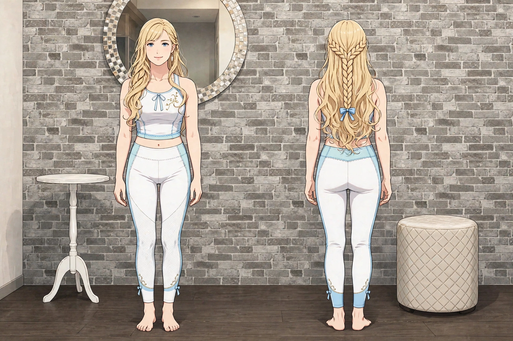

三ノ宮で体のだるさケア疲れ・だるさ

なんとなく体が重い日に。神戸・三ノ宮のステラスピカでは、東洋医学の見立てをもとに、その日の状態に合わせて施術を組み立てます。
東洋医学から見た考え方
はっきりした原因がない重だるさは、「気・水」の巡りの乱れとして捉えることがあります。季節の変わり目にも多いテーマです。
関係する部位の目安は、図1のとおりです。
図1｜だるさが表れやすい肩・お腹・脚（正面）

当店でのケア
おすすめ：オイルマッサージ
全身の巡りを意識した、ゆったり深い圧の施術。無理に強くせず、その日の体に合わせます。
ご自宅でのセルフケア
軽い散歩やストレッチで体を動かす日を作る。だるい日こそ湯船で温まりましょう。
セルフケアで意識したい場所と動きは、図2のとおりです。
図2｜軽く動かしたい脚まわりと足裏（横向き）

キーワード：だるさ重いなんとなく不調
体のだるさのケアは90分 10,000円。開院後のご予約時に「体のだるさが気になる」とお伝えください。